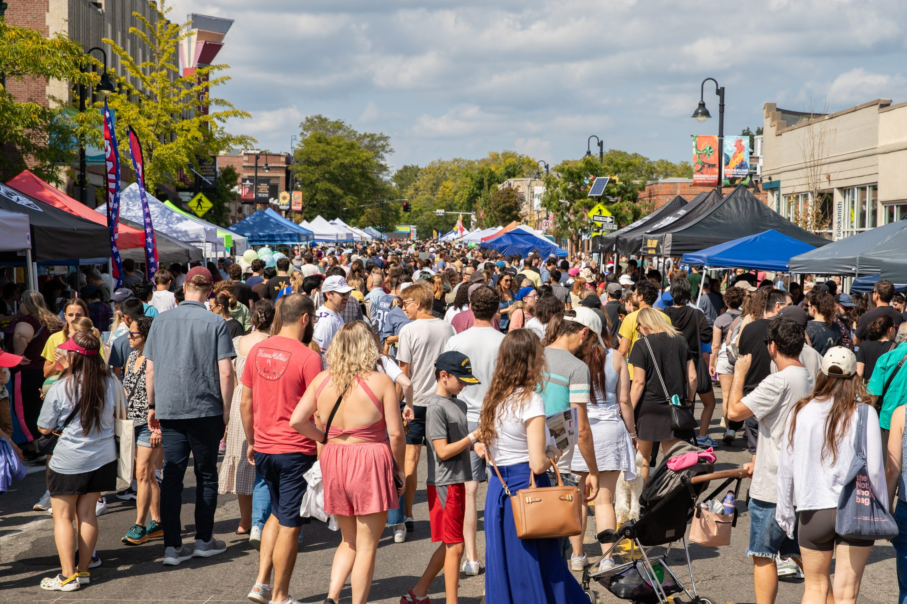

How to Play
Rules: Do it whenever, at your leisure, with any size group you wish. It's untimed and no sweat!
The Reward: For each category that you complete, you will win a unique-in-the-world token (specifically designed for this hunt by Caroline Barnes of BrooklineTurkeys.com with a hole for a necklace string). Finish all four to become a Brookline Legend!
How to Submit: Send photos, videos, or links to a shared folder to neighbor@brookline-scav.org that show proof of what you've done and discovered. We are "easy-breezy" judges—we just want to see you capture the spirit of the clue!
Get a Printable Copy: Download it here!
📍 Places
- Take pictures of the Boston Skyline from 3 distinct locations in Brookline.
- Find the location of these three words:
bond.grant.herb.(Hint: 'What three words'?) - Visit every public Brookline elementary school and pose as their mascot (e.g. the Pierce Penguin).
- Find the final resting place of Mary Boyleston (b. 1648).
- Find the Brookline "path" with the most steps, and take a team photo at the top.
- Find where Bach's Toccata in C was performed on Feb 16, 1900. (Hint: this isn't on the internet -- you'll need a Brookline-specific historical resource.) Get a team picture at the location of the performance.

🌳 Nature
- Identify and photograph these trees: American Sycamore, Linden, and Cypress.
- Find a 2-foot square patch with 5 different species visible at once, and document them.
- Get a picture of yourselves with a live turkey in the background. (Keep a safe distance!)
- Document the entire length of the Emerald Necklace within town limits.
- Paint or draw a still-life of vegetables from Allandale Farm.

👥 People
- Find a Brookline resident with a team member's first name and the last name Schwartz, Johnson, Patel, Rivera, or Lee. Give them a small gift!
- Spell a word using human bodies on a grassy field.
- Bring a baked treat to the members of the Brookline Select Board.
- Conduct a 2-question survey, ask it of at least 20 local folks, and chart the results.
- Introduce yourself to a Barista, Construction Worker, Crossing Guard, Librarian, Spiritual Leader, and a Puppeteer. Ask each of them to give you a recommendation (on any topic)!

🎨 Activities & Things
- Play a game of The Mind at Knight Moves with one of the staff. (Mention the Scavenger Hunt, and they won't charge you the game fee.)
- Build a model of Brookline architecture using food.
- Create a 1-minute audio-visual piece of art (choreographed video, stop-motion clip, multi-track song) about something related to Brookline (historical fact, place, person, personal Brookline story, etc).
- The "Fusion Recipe": Combine one or more ingredients found at each of Paris Creperie and Mike's Deli into a new home-cooked dish.
- Make a three-story human pyramid in front of a town building.
🏆 The Hall of Fame
These intrepid explorers have defeated joylessness and claimed their tokens:
- ✨ Your Name Could Be Here! ✨